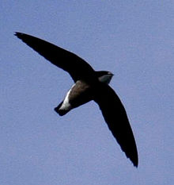
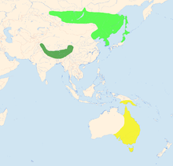
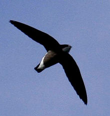
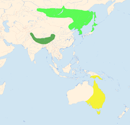

| White-throated Needletail | |
|---|---|
|  | |
| Conservation status | |
| Binomial name | |
| Hirundapus caudacutus (Latham, 1802) |
|
|  | |
Summer Resident Winter |
| White-throated Needletail | |
|---|---|
|  | |
| Conservation status | |
| Binomial name | |
| Hirundapus caudacutus (Latham, 1802) |
|
|  | |
Summer Resident Winter |
The White-throated Needletail (Hirundapus caudacutus), also known as Needle-tailed Swift or Spine-tailed Swift, is a large swift. It is one of the fastest-flying bird in flapping flight, being capable of speeds up to 170 km/h (105 mph).[2][3][4]
These birds have very short legs which they use only for clinging to vertical surfaces. They build their nests in rock crevices in cliffs or hollow trees. They never settle voluntarily on the ground and spend most of their lives in the air, living on the insects they catch in their beaks.
These swifts breed in rocky hills in central Asia and southern Siberia. This species is migratory, wintering south to Australia. It is a rare vagrant in western Europe, but has been recorded as far west as Norway, Sweden and Great Britain.
The White-throated Needletail is a mid sized bird, similar in size to Alpine Swift, but a quite different build, with a heavier barrel-like body. They are black except for a white throat, white undertail, which extends on to the flanks, and a somewhat paler brown back.
The Hirundapus needletailed swifts get their name from the spiny end to the tail, which is not forked as in the Apus typical swifts.

{kind=link}
{kind=link}